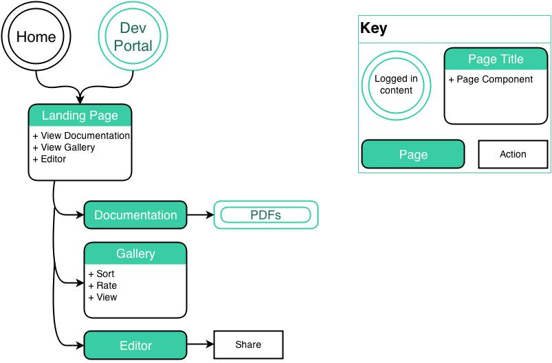

PowerReviews Process

The brief was that this would sit in their current Developer portal, behind the client login.
Per user research with developers, the most critical things that need to be shown when exploring an API.
Research and interviews allowed us to create two main personas - potential users and current users - that we wanted to target. Current users were the most important, per the brief and client conversations. However, we had come up with some ideas that could be used as marketing demos to show how easy it is to use the PowerReviews API.
A lot of layers were needed for our paper prototype.
At each step of the way, we asked users for feedback. Because neither of us are developers and were new to API interactions, this was absolutely critical; it was also helpful to not have our personal use cases influencing the design.
It was extremely difficult to test the interactions. Next time, I would definitely want to use tracing paper to demonstrate overlays and changes to only small portions of a screen.